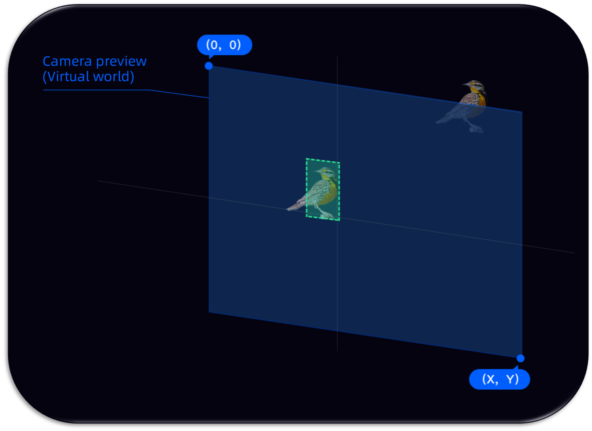
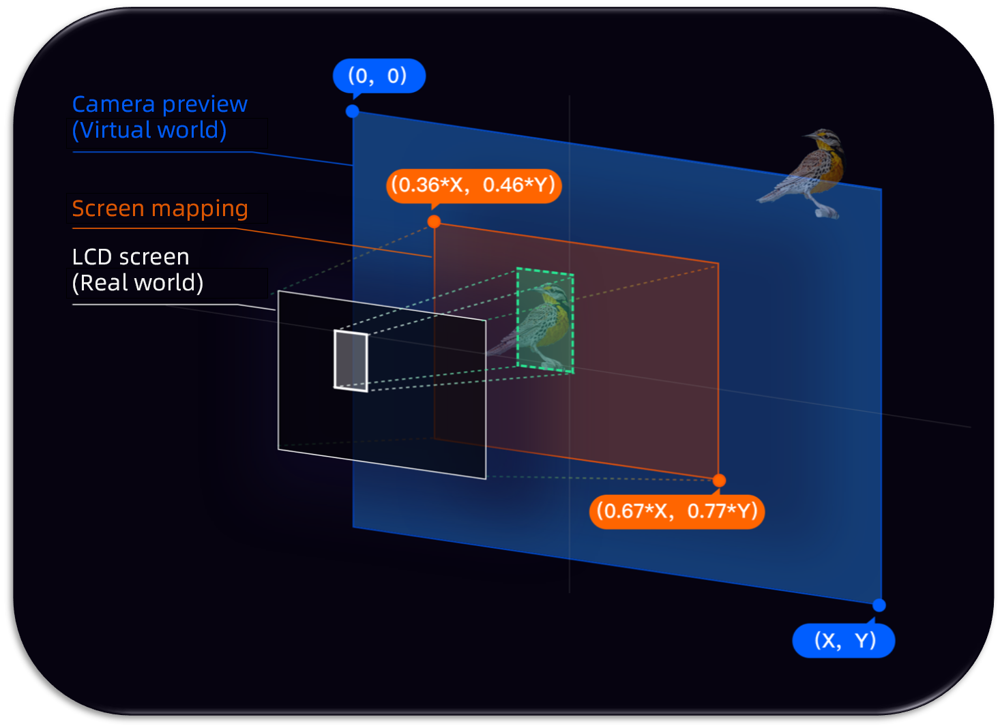
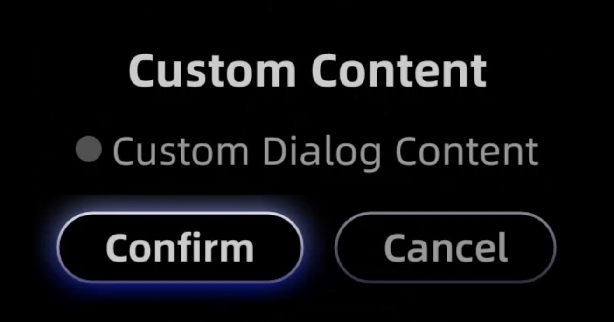

Glass UI SDK (User Guide)
Version: 1.5.4
一、UI SDK介绍（UI SDK Introduction)
1.1 概述（Introduction)
提供一套在Rokid Glass上开发应用的基础UI库,目前已经提供以下支持：
Rokid provides Basic UI SDK to help the developers to build apps in the Rokid Glass:
1. GlassAlignment
由于AR 眼镜特有的屏幕显示特性，在开发眼镜上的识别类应用时，
需要对marked UI做一次align，以保证人眼看到的marked UI和真实世界对齐。
GlassAlignment helps to make the alignemnt between the "markered UI" and the real physiclal when developing the app with recognition features.
2. GlassButton
Glass自定义的Button
GlassButton helps to customize the events for the physical buttons.
3. GlassDialog
提供了一系列常用的对话框
GlassDialog helps the developer to design and use the dialog in Glass.
二、集成说明(Integration)
在project的build.gradle中添加jcenter依赖 (Add jcenger into the build.gradle in the product):
allprojects {
repositories {
google()
jcenter()
}
}
2.1 Gradle依赖 (Gradle Dependency)
implementation 'com.rokid.glass:ui:1.5.4'
2.2 Demo
三、功能列表 (Feature List)
3.1 RokidSystem
Alignment概念： Camera预览界面通过Glass显示屏幕进入人眼睛的映射过程.
Alignment: Camera preview is mirrored into the display in the glasses.
在手机上开发如下图(Developing app in the mobile device) 
在眼镜上开发如下图(Developing app in the AR glasses) 
- 蓝色代表
相机预览的画面 (Blue canvas is for "Camera Preview") - 绿色代表
相机预览中物体的坐标 (Green part is for the bunding box of the target in the "Camera Preview") - 橙色代表
LCD屏幕在相机预览的映射区域,百分比表示真实世界在虚拟世界的比例 (Orange canvas is for the area of the LCD display of AR glasses in the "Camera Preview") - 白色代表物体映射到
LCD屏幕的显示区域 (White part is for the LCD display of AR glasses with the target)
3.1.1 getAlignmentRect
说明：根据preview的rect，获取到映射到LCD屏幕的区域 Note: get the rectangle value of preivew in the LCD display
public static Rect getAlignmentRect(final int previewWidth, final int previewHeight, final Rect previewRect)
| 参数(Parameter) | 含义(Meaning) | 默认值（Default Value) |
|---|---|---|
| previewWidth | Camera preview宽(Camera Preview Width) | |
| previewHeight | Camera preview高(Camera Preview Height) | |
| previewRect | Camera preview的Rect (Camera Preview Rectangle Area) |
示例代码：人脸识别后，在屏幕上画出人脸Rect
Sample Code: After the face recognition, draw the Rect of face in the LCD display
public static final int PREVIEW_WIDTH = 1280;
public static final int PREVIEW_HEIGHT = 720;
//camera preview的人脸区域 (Face bundling rect area in the camera preview)
Rect previewRect = faceDoCache.faceDo.toRect(getWidth(), getHeight());
//根据preview的人脸Rect，映射后，获取最终在屏幕上绘制的Rect (Face bundling rect area in LCD display)
Rect rect = RokidSystem.getAlignmentRect(PREVIEW_WIDTH, PREVIEW_HEIGHT,previewRect);
...
canvas.save();
canvas.translate((rect.left + rect.right) / 2f, (rect.top + rect.bottom) / 2f);
drawRect(canvas, 0, rect.width(), rect.height(), paint, rectConfig);
drawRect2(canvas, 0, rect.width(), rect.height(), paint, rectConfig);
drawRect(canvas, 180, rect.width(), rect.height(), paint, rectConfig);
drawRect2(canvas, 180, rect.width(), rect.height(), paint, rectConfig);
canvas.restore();
...
3.1.2 getWindowRect
说明：根据LCD屏幕的rect，获取到preview的区域rect Note: get the Rect area in preview based on the rect in LCD display.
public static Rect getWindowRect(final int previewWidth, final int previewHeight, final Rect windowRect)
| 参数(Parameter) | 含义(Meaning) | 默认值(Default Value) |
|---|---|---|
| previewWidth | Camera preview宽 (Width of camera preview) | |
| previewHeight | Camera preview高 (Height of camera preview) | |
| windowRect | 屏幕上的Rect(Rect in LCD) |
示例代码: 根据屏幕上的roi区域，得到preview 上的roi区域 Sample Code: get the roi area in preview based on the roid in LCD display.
Rect window = new Rect(0,0,1280,720);
roiRect = RokidSystem.getWindowRect2K(CameraParams.PREVIEW_WIDTH,CameraParams.PREVIEW_HEIGHT, window);
roiRect = FaceRectUtils.scaleRect(roiRect, CameraParams.PREVIEW_WIDTH,CameraParams.PREVIEW_HEIGHT, FaceParams.roiScale);
...
VideoDFaceConf config = new VideoDFaceConf();
config.setDataType(DataFormat.DATA_YUV420);
config.setSize(CameraParams.PREVIEW_WIDTH, CameraParams.PREVIEW_HEIGHT);
config.setRoi(roiRect);
3.1.3 getProjectionMatrix_OpticalSeeThrough
说明：获取OpticalSeeThrough场景下，OpenGLES 3D 应用的投影矩阵（横屏状态），以便人眼看到的marked UI和真实世界对齐 Notes: As for the Optical-See-Through scenario get the projection matrix of OpenGLES 3D apps to ensure the alignment between the marked UI and the phyisical world.
public static float[] getProjectionMatrix_OpticalSeeThrough()
示例代码: 对于横屏应用，获取OpenGLES MVP矩阵的投影矩阵 Sample Coce: As for the apps with the landscape orientation, get the projection matrix of OpenGLES MVP
float projectionMatrix[] = RokidSystem.getProjectionMatrix_OpticalSeeThrough();
...
3.2 GlassButton
Glass自定义的Button (Pre-defined buttons in the glasses)
Focused:

Normal
3.2.1 用法(How to use)
<com.rokid.glass.ui.button.GlassButton
android:id="@+id/custom_dialog_btn"
android:layout_width="wrap_content"
android:layout_height="wrap_content"
android:text="Custom Dialog"
app:layout_constraintLeft_toLeftOf="parent"
app:layout_constraintRight_toRightOf="parent"
app:layout_constraintTop_toBottomOf="@id/dialog_btn" />
3.3 GlassDialog
提供了一系列常用的对话框,通过不同Builder 来构建不同类型的对话框（Rokid provides the useful dialog framework to help build the various dialog box with Builders): We provide the following Builders:
3.3.1 CommonDialogBuilder
通用的 DialogBuilder(Universal DialogBuilder)

| 方法(Function) | 含义(Meaning) | 备注(Notes) |
|---|---|---|
| setTitle | 设置标题(Set Title) | |
| setContent | 设置内容(Set Content） | 和自定义内容布局选其一（Use setContent or customized content) |
| setConfirmText | 设置确定按钮文字（Set text for confirm button) | |
| setCancelText | 设置取消按钮文字（Set text for cancel button) | |
| setContentLayoutId | 设置内容自定义布局id（Set customized content layout ID) | |
| setContentLayoutView | 设置内容自定义布局View（Set customized content layout View) | 和setContentLayoutId选其一(Use ‘setContentLayoutView’ or setContentLayoutId) |
| setConfirmListener | 设置Confirm监听(set the listener for Confirm | |
| setCancelListener | 设置Cancel监听(set the listener for Cancel |
示例代码(Sample Code)
new GlassDialog.CommonDialogBuilder(this)
.setTitle("Title")
.setContent("Content")
.setConfirmText("Confirm")
.setCancelText("Cancel")
.setContentLayoutId(R.layout.layout_custom_dialog_content)
.setConfirmListener(new GlassDialogListener() {
@Override
public void onClick(View view) {
}
})
.setCancelListener(new GlassDialogListener() {
@Override
public void onClick(View view) {
}
})
.show();
3.4 屏幕适配(Display Setting)
接入，在app的AndroidManifest.xml声明(Add the following statement in the app's AndroidManifest.xml):
<manifest>
<application>
<meta-data
android:name="design_width_in_dp"
android:value="640"/>
<meta-data
android:name="design_height_in_dp"
android:value="360"/>
</application>
</manifest>
这里的都是根据设计图的尺寸来，以宽或者高为基准，默认是宽。 The dimension is based the value of width or height. The width value is set as default.
模拟器Preview设置(Preview Setting for the emulator in Android Studio)